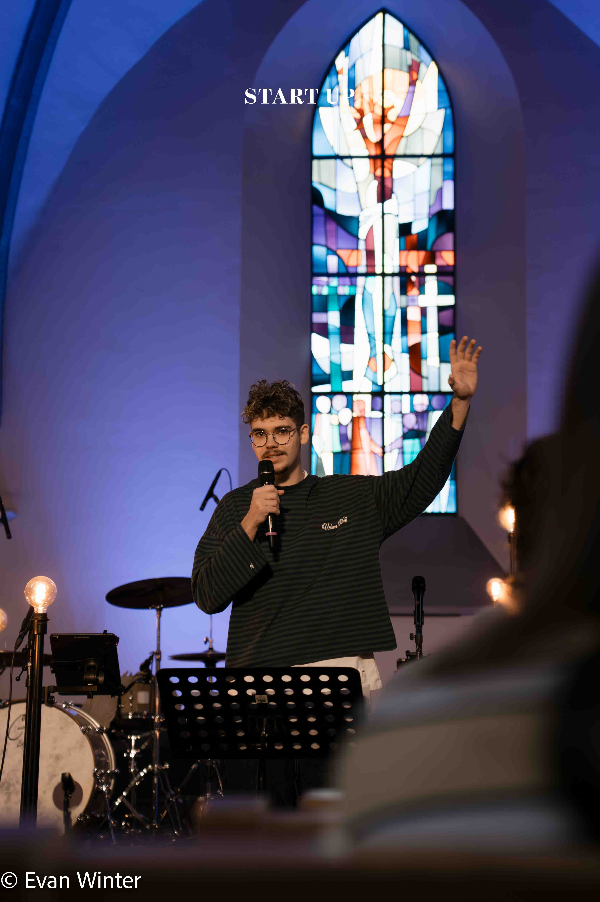
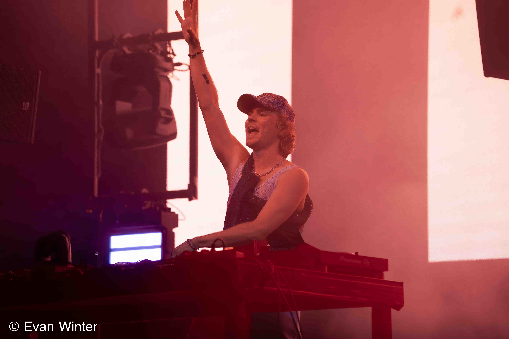

Photography Portfolio
Evan Winter
Fotografie

Auswahl
Ausgewählte Projekte

Felix Jaehn
Ein Projekt, das bewusst groß und dunkel inszeniert ist, um die Energie eines Live-Auftritts visuell greifbar zu machen.

Seenachtsfest Konstanz
Festival, Besucher, Kulisse und Feuerwerk in einer Bildergalierie eingefangen.

Fantastical Kreuzlingen
Das Fantastical abgebildet, aus einer Mischung von dokumentarischer und künstlerischer Perspektive.

Start-up Gottesdienst
Ruhige, respektvolle Reportage mit Fokus auf Stimmung, Begegnung und räumlicher Tiefe.

Godi Kreuzlingen
Eine kompakte visuelle Dokumentation mit klaren Situationen und natürlichem Licht.

Godi Amriswil
Leise, konzentrierte Eventfotografie mit editoriellem Blick auf Menschen und Raum.
Bilder
Meine Lieblingsbilder




FAQ
Häufige Fragen
Was kostet ein Shooting oder Event?
Die Kosten sind von Projekt zu Projekt unterschiedlich und hängen von deinen individuellen Wünschen ab. Schreib mir einfach eine Nachricht – ich erstelle dir gerne ein unverbindliches Angebot.
Wie kann ich dich für ein Shooting buchen?
Nutze einfach das Kontaktformular oder schreibe mir eine Mail, WhatsApp oder auf Instagram.
In welchen Regionen fotografierst du?
Ich bin rund um den Bodensee, im Thurgau, Kreuzlingen, Konstanz und Umgebung unterwegs. Für besondere Projekte reise ich auch gerne weiter.
Wie lange dauert die Bearbeitung der Fotos?
Die fertigen Bilder bekommst du in der Regel innerhalb von 3 bis 7 Tagen nach dem Shooting.
Machst du auch Videos?
Ja! Neben Fotos biete ich auch Videografie für Events, Social Media und Projekte an.
Kann ich die Bilder auch für Social Media nutzen?
Ja, die Bilder sind für Social Media optimiert und dürfen gerne gepostet werden. Wichtig ist, dass du mich als Fotografen nennst, zum Beispiel Fotos: Evan Winter oder 📸 @evanxphotography.
Wie erhalte ich meine Fotos?
Du bekommst einen persönlichen Download-Link, über den du alle Bilder bequem und sicher herunterladen kannst.